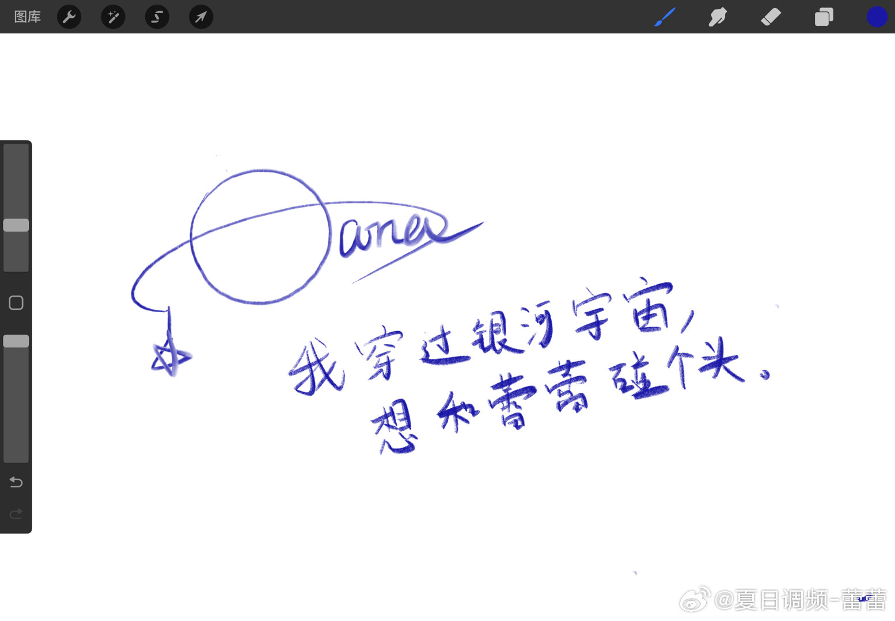
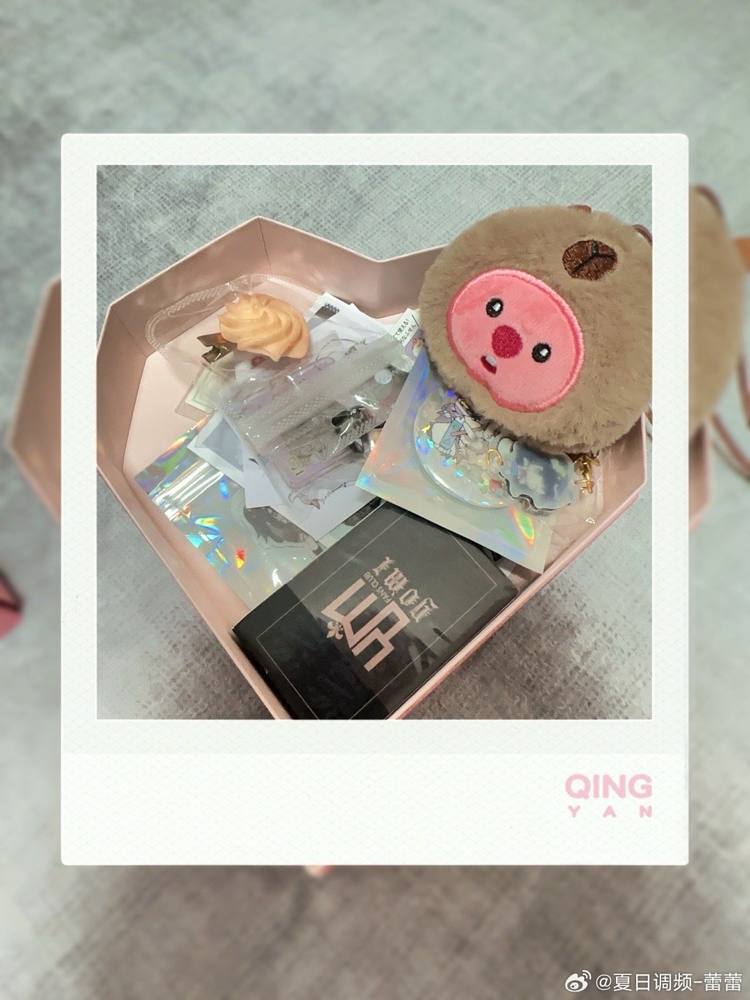
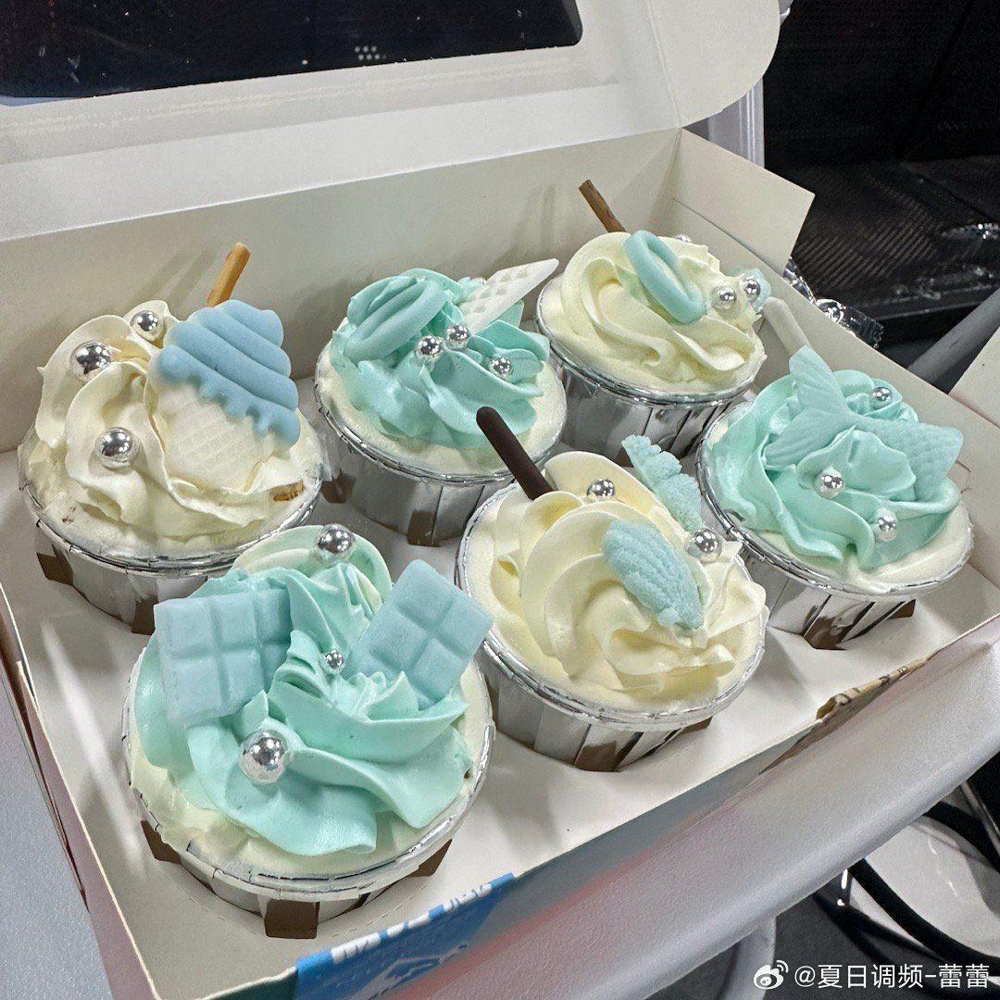

在回去的地铁上编辑了这条百日微博～💙
不知道从何说起，感觉很奇妙，遇见了台上台下的大家。也是在大家的陪伴下，成为了越来越好的自己
没想到能重回舞台，可能真的是“念念不忘，必有回响”趴～当然，蕾蕾还有很多做的不太好的地方，非常感谢大家的包容和体谅～
今天是个很重要的日子，舞台我却没有完成好 在这里向大家道歉～
在这里向大家道歉～
那..祝夏日调频出道百日快乐！！ 希望夏日调频越来越好趴！（考完试会尽快把这几周落下的东西补上。
希望夏日调频越来越好趴！（考完试会尽快把这几周落下的东西补上。
对小鱼小椰想说的话昨天晚上已经说啦！肩并肩一起走下去吧，有多远走多远的那种！
深深鞠躬～～～
（以上可能说的有点乱…. 还有很多话想说，以后慢慢说吧
还有很多话想说，以后慢慢说吧
不知道从何说起，感觉很奇妙，遇见了台上台下的大家。也是在大家的陪伴下，成为了越来越好的自己
没想到能重回舞台，可能真的是“念念不忘，必有回响”趴～当然，蕾蕾还有很多做的不太好的地方，非常感谢大家的包容和体谅～
今天是个很重要的日子，舞台我却没有完成好
那..祝夏日调频出道百日快乐！！
对小鱼小椰想说的话昨天晚上已经说啦！肩并肩一起走下去吧，有多远走多远的那种！
深深鞠躬～～～
（以上可能说的有点乱….
- 
- 
- 